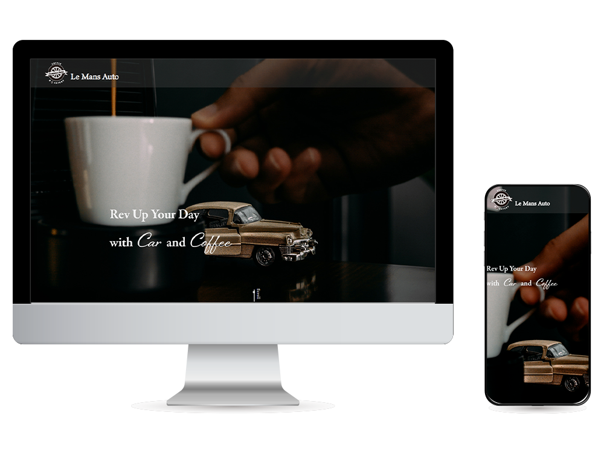
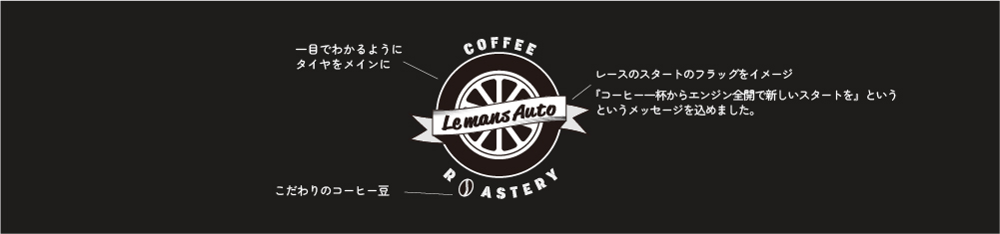

LemansAuto CAFE
(架空) Webサイト
デザイン・コーディング（レスポンシブ対応）

- サイト概要
-
カフェ『LeMans Auto CAFE』のwebサイト（架空サイト）
【LeMans Auto CAFE】
カーエンスーな方々が集まるカフェ。自家焙煎のこだわりのコーヒーを提供している。地元の食材を使った料理の提供や、こだわりのショップオリジナルグッズの販売を行っている。店内は全体的に暗めで、インダストリアルな雰囲気の中に、旧車のグッズや本、ポスターが飾られている。
- ターゲット層
- 旧車やメカニックが好きな、車への関心が高い30-60代の男性
- 目的・ゴール
- カフェの雰囲気を知ってもらい、新規の顧客開拓に繋げる。
- 制作ポイント
- 自家焙煎のコーヒーへのこだわりが鮮明に伝わるよう、サイト全体にシックで高級感のあるコーヒーの様な色合いを使用し、フォントや配色からシックなお店の雰囲気がでるようにしました。旧車のような無機質な中にこだわりを感じるシンプルなデザインになるよう工夫しました。
また、メニューの開閉の動きやリンクのホバーや画面変移の動きに、車が走っていくような印象の流れる動きを加えました。
作成したロゴマークは、一目で『LeMans Auto CAFE』のロゴであると認識できるようタイヤをモチーフにし、『COFFEE』の『O』をコーヒー豆の形にあしらいました。- #1e1c1b
- ベースカラー
- #545353
- メインカラー
- #c1a362
- アクセントカラー
横に流れるリボンは、車のレースのスタートの旗をイメージし、『LeMansAuto CAFE』のコーヒー一杯からエンジン全開でまた新しいスタートを切る、というメッセージを込めています。
ターゲット層である方々が好きな80年代の車に関するレトロなロゴや”ROUTE66”のようなどこか懐かしい印象を与えられるようにし、カフェ限定グッズのTシャツや、キャップにも展開できるロゴデザインを目指しました。
- 制作期間
- デザイン2日、コーディング3日
- 使用ツール
- illustrator/Photoshop/HTML・CSS/JavaScript